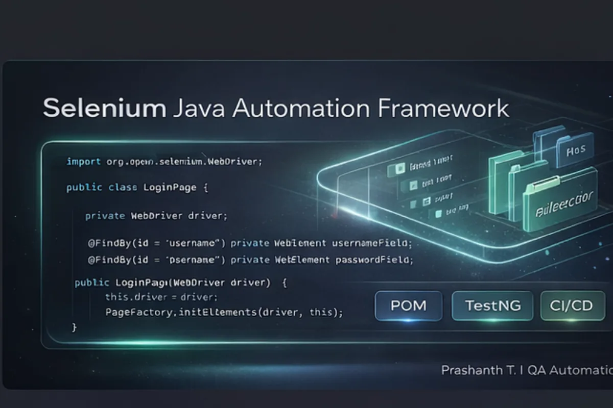
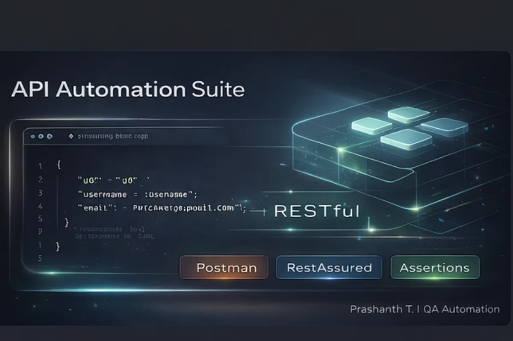
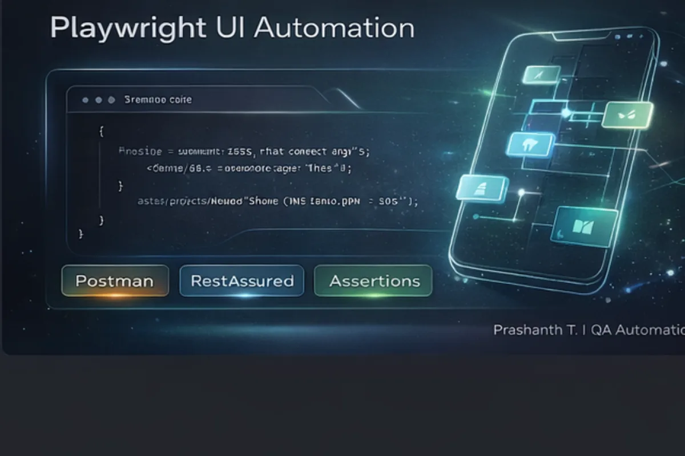
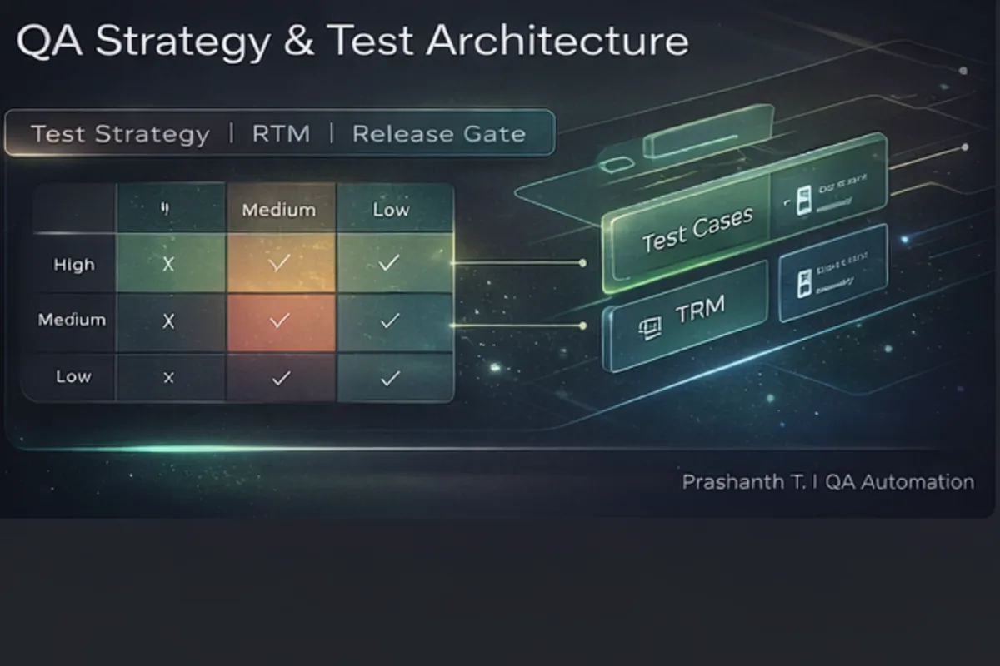

Selenium
Selenium Java Automation Framework
Enterprise POM + TestNG, config-driven runs, reusable utilities, CI-ready structure.
I design scalable UI + API automation frameworks (Selenium, Playwright, RestAssured/Postman), strengthen CI/CD pipelines, and help teams ship with confidence.
Frameworks built the way teams build in real companies: clean structure, CI, maintainability.

Enterprise POM + TestNG, config-driven runs, reusable utilities, CI-ready structure.

Auth, assertions, validations, reusable request patterns and clean reporting structure.

Fast, stable UI tests with retries, clean selectors, and smoke + regression structure.

Risk-based planning, RTM, release readiness checklist, and enterprise QA samples.
Core tools recruiters search for.
What I optimize for: speed, stability, and release confidence.
Short, realistic feedback that speaks like real teams.
“Prashanth brought order to our automation. Clear structure, fewer flaky failures, faster releases.”
“He asks the right questions early, so we don’t discover requirements gaps during UAT.”
“Strong API validation approach. Clean reporting and consistent patterns that the whole team can follow.”